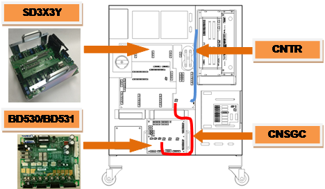
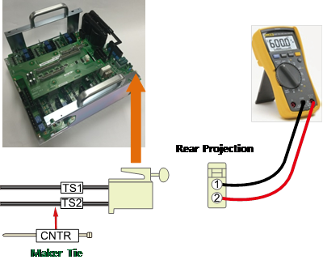
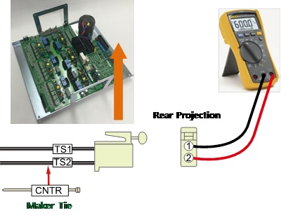
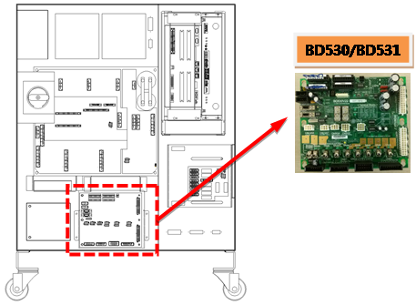
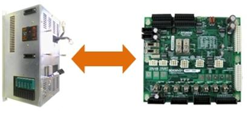
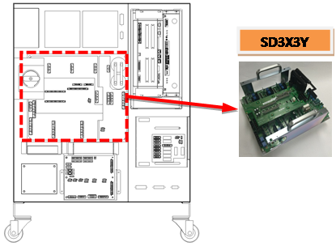
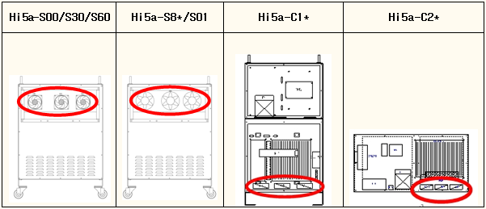

1.1.2.1. Outline
Recovery electric power that generated when Robot reduces a speed or moving toward to a gravity direction is discharged by resistance.
This error is related to an overheat that caused by the resistance.
This error may occurs due to a reduced performance of cooling fan, overheat detection sensor's circuit malfunction, disconnection of the resistor, overload of recovery discharge capacity that caused by momentary rapid movement or a continuous movement of robot.
1.1.2.2. Causes and checking methods
|
<Case: Error always occurs even when the motor is off> (1) Please examine the components that are related to the overheat error detection n Please examine the resistor of CNTR cable n Please replace CNSGC cable and examine it n Please replace BD530/BD531 board and examine it n Replace the servo drive unit and then check it.
<Case: Error always occurs at the moment when the motor turns on> (2) Please examine the components that are related to the power n Please examine the resistance value of CNDR cable n Replace the servo drive unit and then check it. n Please examine the 3-phase voltage from the inside of controller n Please examine the controller's 3-phase input voltage
<Case: Error occurs at a certain step according to the Robot's operation speed> (3) Please make changes on a speed of Robot's operation in order to confirm the error n Please reduce the speed of Robot's operation in order to confirm the error n Please examine the recovery discharge resistance value
<Case: Error occurs after 5 minutes from the startup of Robot's operation> (4) Please examine the controller's cooling system and recovery electric power level n Please examine the operational status of each fan n Please examine the power voltage of each fan n Please reduce the speed of Robot's operation in order to confirm the error |
(1) Please examine the components that are related to the overheat error detection
Recovery resistance overheat error is detected by Servo Drive Unit. Each end's On/Off status of overheat sensor that are attached to a recovery resistor is being monitored by CNTR connector. Detected error will be sent through CNSGC cable to be handled by software at the BD530/BD531 board.

(a) Hi5a-S00 controller
(b) Hi5a-S30 controller

(c) Hi5a-N00 controller

(d) Hi5a-N30 controller
Figure 1.5 Arranging the parts related to the regenerative resistor overheating error
n Examining the CNTR cable
Please examine the sensor from a CNTR connector that connects the overhear detection sensors.
In a normal status, sensor must be measured less or than 0.1 ohm

(a) Hi5a-S00 controller

(b) Hi5a-S30 controller

(c) Hi5a-N00 controller

(d) Hi5a-N30 controller
Figure 1.6 Measuring the resistance value at CNTR
n Replacement and examining of CNSGC cable
Replace the CNSGC cable with new one and test it. If the error does not persist, cable connection problem caused this error. Please replace the CNSGC cable with new one.
n Replacement and examining of BD530/BD531
Replace the BD530/BD531 with new one and test it. If the error does not persist, the board malfunction caused this error. Please replace the BD530/BD531 with new one.

(a) Hi5a-S00 controller

(b) Hi5a-N controller
Figure 1.7 Replacement of BD530/BD531
n Replacement and inspection of servo drive unit
The regenerative resistor overheating error detection module is as shown below.
Ø Hi5a-S controller : Medium size SD3X3Y, Small size SD3A3D
Ø Hi5a-N controller : Medium size SD1L2C, Small size SA3A3D
Please check the components in the controller that you are currently using and examine it. Please replace it with new one and see if the error persists.

(a) Hi5a-S00 controller
(b) Hi5a-N00 controller
Figure 1.8 Replacing the module when the regenerative discharge resistor overheating error occurs
(2) Please examine the components that are related to the power
Overhear error may occurs in a case when resistor has disconnection or discharge control malfunction. It also can occur when recovery discharge resistance value and a 3-phase voltage increases.
n Examining recovery discharge resistor's disconnection
If measured resistance value at the end of CNDR cable is many M ohm, the resistor's disconnection or connection problem of internal wiring caused this error. Please replace the recovery resistor with new one or repair the wiring.

(a) Hi5a-S00 controller
(b) Hi5a-S30 controller

(c) Hi5a-N00 controller

(d) Hi5a-N30 controller
Figure 1.9 Measuring the resistance value at CNDR
n Replacement and inspection of drive unit
Replace the regenerative discharge resistor overheating error detection module and then check if the error occurs again. An error may occur continuously due to a module's internal circuit malfunction.
Ø Hi5a-S controller
l Medium size Robot's Servo Drive Unit: SD3X3Y
l Small size Robot's Servo Drive Unit: SD3A3D
Ø Hi5a-N controller
l Medium size Robot's diode module : SD1L2C
l Small size Robot's Servo Drive Unit: SA3A3D
n Examine the 3-phase voltage (inside of the controller)
Recovery discharge operation activates from approximately DC 375V
If a voltage over AC242 V enters to the Servo Drive Unit, a recovery discharge resistance overheat error may occur when the motor turns on.
If the input voltage exceeds the allowed range, please examine according to a controller's input voltage examination procedures and a controller's 3-phase internal voltage examination procedures.
Ø Servo Drive Unit input voltage specification: 3-phase AC 220V
Ø Allowed range when motor turns on: 198 V ~ 242 V
(3) Please make changes on a speed of Robot's operation in order to confirm the error
In case when a Robot's speed is reducing, or moving toward to gravity direction, direct current voltage of a Servo Drive Unit increases, and the voltage will be discharged with a recovery discharge resistance in order to prevent damages on components that may caused by voltage increase.
If a Robot reduces its speed rapidly, or make a high speed movement toward to gravity direction, it may cause this error. Please confirm if this error occurs according to the speed of Robot's operation.
n Make changes on a speed of Robot's operation
If a recovery electric power that generated by Robot's operation exceeds the controller's designed specification, recovery resistance overheat error may occurs. Please reduce the speed of a step that the error occurs and re-operate in order to confirm if the error persists.
n Examining recovery discharge resistance value
If a measured resistance value at the end of CNDR cable exceeds over 10% of the value described in the manual, the resistor malfunction is the cause of this error. Please replace the resistor. Please refer to the previous page for the measuring method.
Ø Hi5a-S controller
l Medium size (SD3X3Y) recovery discharge resistance value: 5 ohm(S00)
l Large size (SD3X3Y) recovery discharge resistance value: 4 ohm (S80)
l Small size (SD3A3D) recovery discharge resistance value: 15 ohm(S30)
Ø Hi5a-N controller
l Medium size (SD1L2C) recovery discharge resistance value: 5 ohm
l Small size (SA3A3D) recovery discharge resistance value: 15 ohm
(4) Please examine the controller's cooling system and recovery electric power level
If recovery resistance overheats error occurs after 5 minutes from the startup of Robot's activation, the cause would be either the controller's cooling system malfunction or a speed of Robot's operation exceeded the designed specification of the controller.
Fans are being used at rear of the controller in order to cool down the Servo Drive Unit's heat sink and the recovery discharge resistor.
Table 1-1 Position for installing the controller pan (Hi5a-S)

Table 1-2 Position for installing the controller pan (Hi5a-N)
Ç¥ 1-2 Hi5a-NÁ¦¾î±â ÆÒ ¼³Ä¡À§Ä¡

n Examining the operational status of each fan
Please replace a fan if it does not spin, or the speed is abnormally slow. Lifetime of a fan may vary according to an operating environment or an amount of operated hours.
n Examining fan's power voltage
Please check the input voltage of fans if all of them do not operate. Input voltage of a fan is set to AC220V and the allowed range is within 10% of the standard voltage. If voltage is lower than 10% of the standard voltage, the cooling effect will be reduced due to slow spinning speed of a fan. In case when the voltage is low, please check the input voltage for fan's power supply connector (CNFN2) and a controller.
n Please confirm an occurrence of an error according to the speed of Robot's operation
If an overheat error occurs during a continuous operation over 5 minutes, it is because of the consecutive operation of Robot exceeded the cooling capacity of a controller. Please reduce the speed of Robot's operation and check if the error persists. In order to resolve this error, if you had to reduce the operation speed too much just to resolve this error, please enquire at our office.